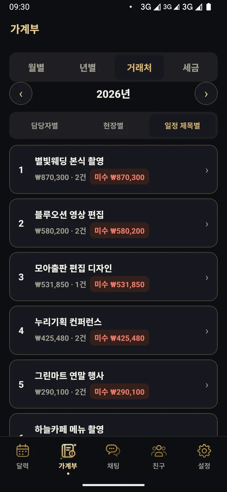
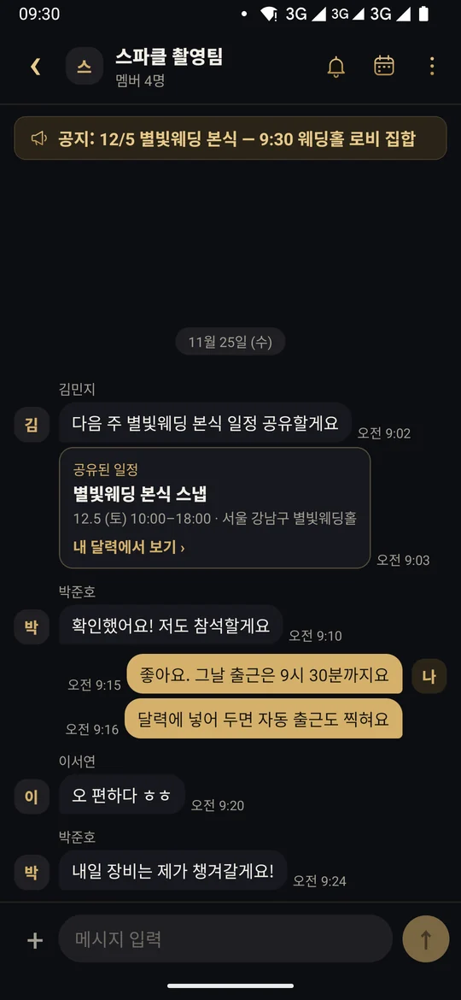
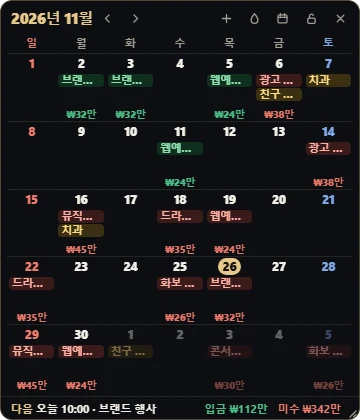

사용 설명서
스파클달력은 일한 날, 받을 돈, 받은 돈을 달력 한 장에 모아 줍니다. 휴대폰에서 적고 PC에서 크게 보세요. 같은 계정이면 어디서 고쳐도 바로 맞춰집니다.
1시작하기
휴대폰
- Google Play에서 스파클달력을 설치합니다.
- 카카오 또는 구글로 로그인합니다. 처음 로그인한 날부터 30일 동안 프리미엄을 무료로 써 볼 수 있어요.
- 로그인 없이 둘러보기로 먼저 써 볼 수도 있어요. 이때 기록은 휴대폰 안에만 남아요.
PC (윈도우 10·11)
- PC에서 calendar.sparklekorea.com을 열고 Windows 다운로드를 누릅니다.
- 받은 SparkleCalendar-Setup.exe를 엽니다. 파란 “PC 보호” 창이 나오면 추가 정보 → 실행을 누르세요.
- 설치가 저절로 끝나고 프로그램이 켜지면 휴대폰과 같은 계정으로 로그인합니다.

2일정 만들기
- 달력에서 날짜를 누르고 +를 누릅니다. 여러 날을 한 번에 고를 수도 있어요.
- 제목, 장소, 시간, 금액(시급·일당 등), 거래처, 담당자를 적습니다. 담당자 번호는 주소록에서 골라 넣을 수 있어요.
- 매주 같은 일이면 반복, 교대 근무면 주·저·야·당 패턴으로 한 번에 채웁니다.

3출퇴근 기록 PREMIUM
직접 누르기
오늘 일정에서 출근, 일이 끝나면 퇴근을 누르면 그 시각이 기록되고 근무 시간과 인건비가 계산돼요. 휴대폰 홈 화면의 출퇴근 위젯으로도 누를 수 있어요.
장소 도착·이탈 시 자동 기록
- 설정 → 근태 → 장소 도착·이탈 시 자동 기록을 켭니다.
- 위치 권한을 항상 허용으로 바꿉니다. 켤 때 권한 화면이 자동으로 열려요.
- 일정에 일하는 장소를 적어 두면, 그날 장소 근처(약 300m)에 도착할 때 출근, 떠날 때 퇴근이 찍히고 알림이 와요.

4인건비와 입금 관리
- 인건비 자동 계산 PREMIUM: 시급·일당과 근무 시간으로 금액을 채워요. 일당은 12시간을 넘긴 시간에 초과 수당을 더할 수 있어요(설정 → 정산).
- 세금 PREMIUM: 프리랜서는 원천징수(3.3%)를 뺀 실수령액, 사업자는 부가세(10%)를 더한 금액으로 보여 줘요. 나라·화폐·세율은 설정 → 정산에서 바꿔요.
- 입금 표시: 돈을 받으면 일정에서 입금 완료를 눌러요. 달력 위에 이번 달 입금·미입금 합계가 나와요.
- 미입금 알림: 일이 끝나고 정한 날(3·7·14·30일)이 지나도 입금 완료가 아니면 오전 10시에 휴대폰으로 알려 줘요.
5가계부와 거래처
아래 탭의 가계부에서 달마다 수입·지출과 받을 돈을 봐요. 거래처 · 세금에서는 거래처별로 일한 날과 금액을 모아 정산 내역서로 공유하고, 한 해 세금 리포트를 볼 수 있어요 PREMIUM.
오래된 미입금은 빨갛게 표시돼 놓치지 않게 도와줘요.

6친구·그룹·채팅
- 친구 탭에서 초대 코드나 카카오톡 공유로 친구를 맺어요.
- 같이 일하는 사람끼리 그룹을 만들면 그룹 대화방이 생겨요. 일정을 공유하면 그 일정 대화방도 생겨요.
- 대화방에서 글, 사진, 파일(20MB까지), 연락처, 일정을 보낼 수 있어요. 받은 일정은 눌러서 내 달력에 넣어요.
- 사진을 누르면 크게 보고, 저장(갤러리)이나 공유를 할 수 있어요. 위아래로 쓸면 닫혀요.
- 메시지를 길게 누르면 답장·복사·삭제·신고를 고를 수 있어요. 원하지 않는 사람은 차단할 수 있어요.
- 대화방 알림을 끄거나 위에 고정할 수 있고, 알림에 내용을 숨기는 설정도 있어요.

7휴대폰 홈 화면 위젯
홈 화면 빈 곳을 길게 누르고 위젯 → 스파클달력에서 고르세요. 앱을 열지 않아도 이번 달 일정, 출퇴근 버튼, 날씨를 바로 봐요.


8PC 프로그램

큰 달력
- 빈 칸을 두 번 클릭하면 새 일정, 일정을 끌어다 놓으면 이동·복사·날짜 늘리기를 골라요. Ctrl를 누르고 놓으면 바로 복사돼요.
- 마우스 휠로 이전 달·다음 달, Ctrl+F로 일정 검색.
- 위쪽에 지금 기온, 날짜 칸에 날씨 아이콘이 나와요. 날씨 위치는 설정 → 달력 · 표시에서 골라요. “자동”이면 인터넷 연결로 대략 위치를 찾아요.
가계부를 큰 표로
달마다 입금·미입금 막대, 거래처·세금 리포트를 넓은 화면에서 정리해요.

바탕화면 위젯과 한 줄 달력
설정 → PC 프로그램에서 켜요.
- 바탕화면 달력 위젯: 한 달 달력이 바탕화면에 붙어 있어요. 위쪽 자물쇠로 바탕화면 고정·맨 앞·클릭 통과를 고르고, 물방울로 배경 투명도를 바꿔요.
- 작업 표시줄 위 한 줄 달력: 오늘·다음 일정과 이번 달 미수를 한 줄로 보여 줘요.
- 작업 표시줄 오른쪽 아래 트레이 아이콘에 오늘 남은 일정 수가 표시돼요.

채팅과 알림
- 대화방은 따로 창으로 열려 키보드로 편하게 대화해요. 사진은 새 창에서 크게 보고 PC에 저장해요.
- 새 메시지는 화면 구석 알림으로 와요. 휴대폰과 연결 같은 윈도우 알림에 가리면 설정 → PC 프로그램 → 알림 위치를 오른쪽 위로 바꾸세요.
- 창의 X를 눌렀을 때 트레이로 숨길지, 끌지 설정에서 정할 수 있어요. 트레이로 숨겨도 알림은 계속 와요.
업데이트와 버전
새 버전은 프로그램이 알아서 받아 둬요. 준비되면 알림이 오고, 알림을 누르면 바로, 아니면 프로그램을 종료할 때 설치돼요. 버전은 창 맨 위 제목 줄과 설정 → 앱 정보에서 볼 수 있어요. 휴대폰 앱과 같은 번호를 씁니다.
9동기화와 백업
- 동기화: 같은 계정으로 로그인한 휴대폰과 PC는 일정과 정산 설정이 자동으로 맞춰져요. 한쪽에서 고치면 몇 초 안에 다른 쪽에도 보여요.
- 클라우드 백업 PREMIUM: 일정이나 설정이 바뀌면 잠시 뒤 서버에 백업 사본을 올려요. 설정 → 백업에서 직접 백업하거나 불러올 수 있어요.
- 데이터 백업: 설정 → 백업 → 데이터 백업에서 파일로 내보내 따로 보관할 수 있어요.
10무료와 프리미엄
| 무료 | 프리미엄 |
|---|---|
| 일정 달력, 반복·교대 근무, 입금·미입금 표시, 가계부, 친구·그룹·채팅, 휴대폰·PC 위젯, 휴대폰↔PC 동기화, 날씨 | 인건비 자동 계산·12시간 초과 수당, 세금 정산(3.3%·부가세), 출퇴근 기록·자동 출퇴근, 거래처별 정산·내역서·세금 리포트, 클라우드 자동 백업, 태양 궤적 AR |
처음 로그인하면 30일 동안 프리미엄을 무료로 써 볼 수 있고, 끝나도 자동 결제되지 않아요. 결제는 휴대폰 앱의 설정 → 계정 · 플랜에서 월간·연간 구독이나 평생 이용권으로 할 수 있고, 같은 계정의 PC에도 그대로 적용돼요. 자세한 조건은 이용약관을 봐 주세요.
11문제가 생기면
휴대폰과 같은 계정(카카오·구글)으로 로그인했는지 확인하세요. 설정 → 계정 · 플랜에 로그인한 이메일이 나와요.
위치 권한이 “항상 허용”인지, 휴대폰 절전 모드가 스파클달력을 막고 있지 않은지 확인하세요. 일정에 장소가 적혀 있어야 해요.
휴대폰 설정 → 애플리케이션 → 스파클달력 → 알림이 켜져 있는지, 그 대화방 알림을 끄지 않았는지 확인하세요. PC는 프로그램이 트레이에 켜져 있어야 알림이 와요.
새 휴대폰에서 같은 계정으로 로그인하면 일정이 이어져요. 프리미엄은 플랜 화면의 구매 복원을 눌러 주세요.
그래도 안 되면 contact@sparklekorea.com으로 알려 주세요. 설정 → 앱 정보의 버전(예: 1.0.84 · r315)을 같이 적어 주시면 더 빨리 도와드릴 수 있어요.